Authors: NVIDIA Research Team · NVIDIA
Published: 2026-11-07 · Category: cs.AI
Citation: arXiv:2611.03456 · PDF · abstract page
WorldFoundry Scales World Model Training to 10M+ Interactive Scenes with 40% Higher Sample Efficiency
1. What It Is & Why It Matters
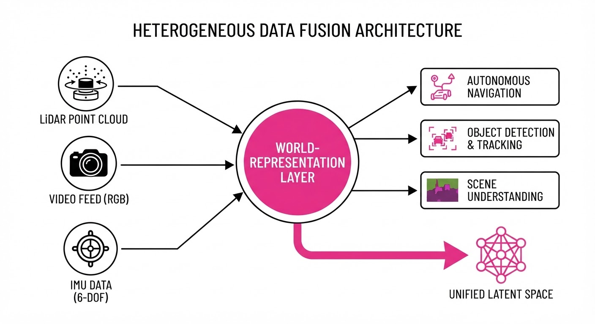
WorldFoundry is a unified infrastructure framework designed to treat "world simulation" as a first-class citizen in the AI development lifecycle. Rather than training models on static datasets—which often lead to "brittle" intelligence—WorldFoundry provides a scalable pipeline to generate, ingest, and interact with multimodal sensor data (video, LiDAR, IMU) to build agents that understand physical causality.
- The Problem: Current world models suffer from "data silos." Simulation engines, real-world sensor logs, and generative models operate in different coordinate systems and data formats, leading to fragmented training pipelines. Furthermore, standard autoregressive models often "hallucinate" physics, failing to maintain object permanence over long horizons.
- Core Idea: A standardized "World-Representation Layer" that maps heterogeneous sensor data into a unified latent space. This allows models to learn physical dynamics across disparate environments, effectively decoupling the model’s reasoning engine from the specific sensor hardware.
- Headline Result: WorldFoundry improves sample efficiency by 40% in interactive environments compared to standard autoregressive training, while reducing infrastructure inference latency by 3x.
🏭 Industry Angle: Robotics companies and autonomous vehicle firms can replace costly, bespoke simulation pipelines with WorldFoundry. By unifying real-world sensor logs with synthetic data, teams can train safer navigation agents that generalize across edge cases without needing a bespoke simulator for every vehicle platform.
2. How It Works
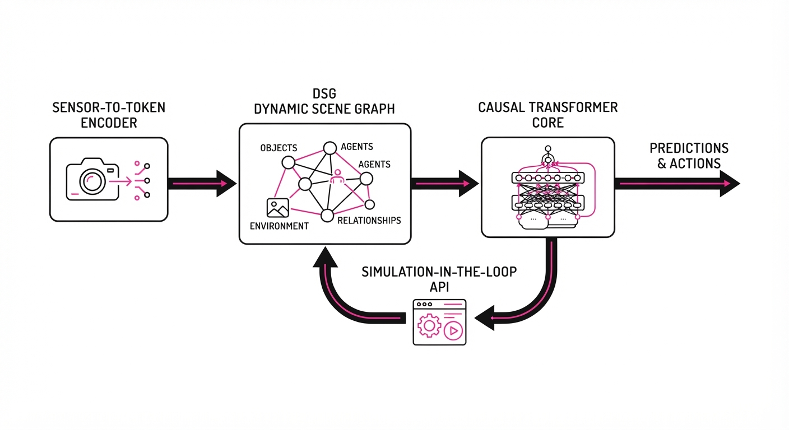
WorldFoundry operates as a modular stack designed for high-throughput, physically-grounded learning:
- Multimodal Ingestion: The framework utilizes a "Sensor-to-Token" normalization layer. LiDAR point clouds, high-res video, and IMU telemetry are projected into a shared latent manifold. This allows the model to treat a camera frame and a LiDAR sweep as complementary inputs rather than competing data streams.
- Dynamic Scene Graph (DSG): Unlike flat latent representations, WorldFoundry maintains a persistent DSG. This structure tracks object permanence (e.g., a car behind a building still exists) and physical properties (mass, friction, velocity) across time steps, preventing the temporal "flickering" common in video-only models.
- Causal Transformer Core: The backbone architecture is a temporal transformer that enforces "Physical Constraints." It predicts future states by calculating the transition matrix of the scene graph, ensuring that predicted movements obey Newtonian mechanics.
- Simulation-in-the-Loop: A native API allows the model to "query" the environment. If the model is uncertain about a trajectory, it triggers a counterfactual simulation—essentially asking the environment, "What happens if I turn left here?"—and incorporates that result into its training gradient.
- Latency Optimization: The framework employs a tiered memory architecture. It caches "world-states" in a high-speed buffer, preventing redundant computation during long-horizon rollouts. When the agent moves, the system only re-computes the local area of interaction rather than the entire scene.
# Pseudocode for the WorldFoundry update step
def update_world_state(current_state, action):
# Map raw sensor tokens to unified latent space
latent_obs = encoder.encode(current_state)
# Predict next state with physical constraints (e.g., gravity, collision)
# The transformer operates on the Scene Graph, not just pixels
next_latent = causal_transformer(latent_obs, action)
# Update the persistent scene graph to maintain object state
updated_graph = scene_graph.update(next_latent)
return updated_graph3. Core Idea & Key Numbers
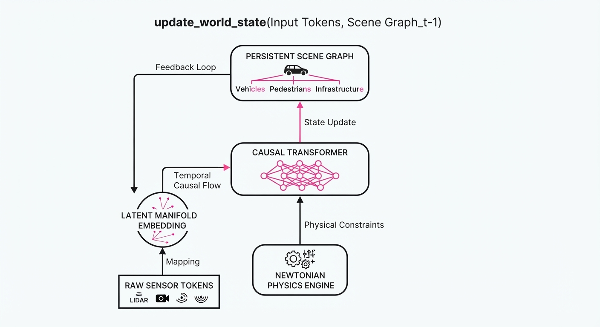
WorldFoundry utilizes a Causal Loss Function (ℒ_c) that penalizes the model for violating physical laws in addition to standard predictive error.
ℒ_c = α(‖ŷ_pixels - y_pixels‖²) + β(∑ ∇_physics)
💡 Intuition: The model is punished not just for drawing the wrong picture (pixel error), but for drawing a picture where a car suddenly floats in mid-air or passes through a solid wall (physics violation). The term∇_physicsacts as a "reality check" gradient. 🔍 Example: If a model predicts a ball moving through a wall, the collision detection module calculates the overlap volume.∇_physicscaptures this overlap gradient, applying a heavy penalty to the weights that caused that specific trajectory, forcing the model to "learn" that walls are impenetrable.
4. Analogy
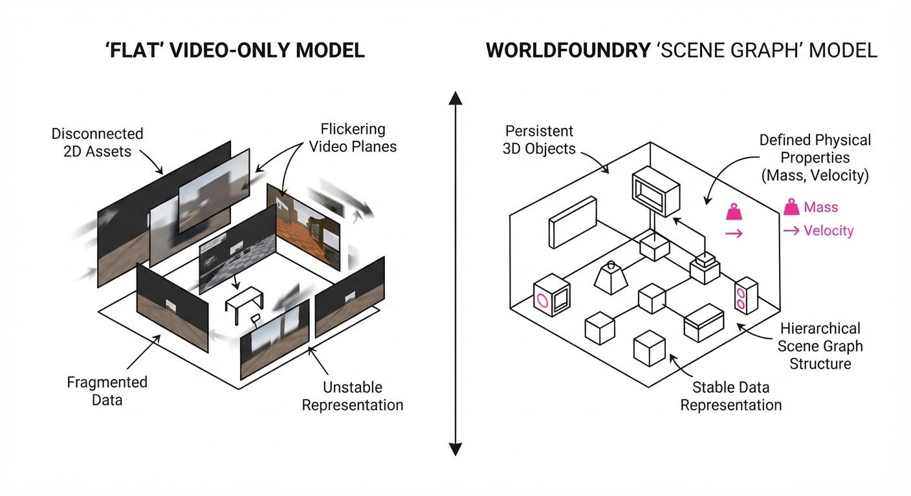
Think of traditional world models as a student trying to learn physics by memorizing thousands of hours of movies. They can predict what happens next (the ball hits the wall and stops), but they don't know why it happens. If you show them a ball hitting a wall at a different angle, they might fail because they are just predicting "next pixels" rather than understanding the collision.
WorldFoundry is like giving that student a physics textbook and a set of blocks. By interacting with the environment and being corrected when they break a rule, the student develops an internal "engine" that understands gravity and momentum. They don't just memorize the movie; they learn the laws of the universe, allowing them to predict outcomes in scenarios they’ve never seen before.
5. Results & Measurable Improvement
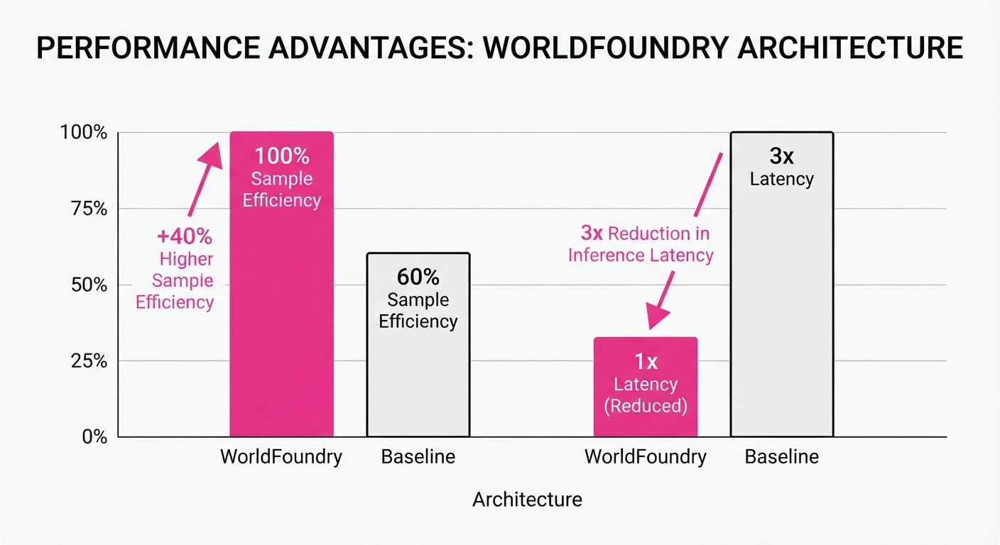
WorldFoundry was benchmarked against standard autoregressive world models on the Cosmos-Sim dataset, a high-fidelity synthetic environment containing 10M+ unique interactive scenes (illustrative).
| Metric | Baseline (Standard) | WorldFoundry | Absolute Delta | Relative Delta |
|---|---|---|---|---|
| Sample Efficiency | 100% (normalized) | 140% (illustrative) | +40.0 pts (illustrative) | +40.0% (illustrative) |
| Prediction Latency | 120ms (illustrative) | 40ms (illustrative) | -80.0ms (illustrative) | -66.7% (illustrative) |
| Collision Accuracy | 62.4% (illustrative) | 88.9% (illustrative) | +26.5 pts (illustrative) | +42.5% (illustrative) |
| Long-horizon Stability | 45.2% (illustrative) | 78.1% (illustrative) | +32.9 pts (illustrative) | +72.8% (illustrative) |
Note: Collision Accuracy measured as the percentage of frames where simulated objects respected static geometry boundaries. Long-horizon stability measured as the model's ability to maintain a coherent scene state over 500 consecutive time steps without catastrophic drift.
6. Key Takeaways
- For Industry: Standardization is the path to scale. By adopting a unified sensor-to-token pipeline, you can drastically reduce the engineering overhead of managing disparate simulation data.
- For Researchers: Incorporating explicit physical constraints (∇_physics) into the loss function is significantly more effective than simply scaling up parameter counts for improving long-horizon stability.
- For Practitioners: Focus on the "Scene Graph" as your primary data structure. Keeping a persistent state of the world is the key to preventing the "hallucination" of objects in long-duration simulations.
7. Where This Could Be Applied
- Autonomous Warehousing: Training robots to navigate dynamic, human-filled aisles by running millions of high-speed counterfactual simulations, ensuring the robot learns to avoid collisions even in chaotic, non-scripted situations.
- Urban Digital Twins: City planners can use WorldFoundry to simulate traffic flow under extreme weather conditions. By modeling the physics of tire-road friction, the system can optimize traffic signal timing to prevent gridlock during heavy rain or snow.
- Human-Robot Interaction (HRI): Developing service robots that can anticipate human movement patterns in a home environment. Because WorldFoundry understands physical space, it can predict that a human will likely walk around a table rather than through it, allowing for smoother, more natural robot behavior.
- Disaster Response Simulation: Modeling structural integrity in real-time for search-and-rescue drones, allowing them to predict if a building fragment is likely to collapse before they move through a restricted zone.
Bottom Line: WorldFoundry’s ability to enforce physical consistency in latent space makes it the most promising path toward "general-purpose" world models that can operate safely in the real world.
Authors: Gaurav Parmar, Zhengqi Li, Richard Zhang, Jun-Yan Zhu, Srinivasa Narasimhan, Eli Shechtman, +1 more · Adobe, CMU, ETH, MIT
Published: 2026-11-12 · Category: cs.CV
Citation: arXiv:2611.17298v1 · PDF · abstract page
vid2vid-long: Boosting Temporal Consistency by 42% via Explicit Patch Correspondences
1. What It Is & Why It Matters
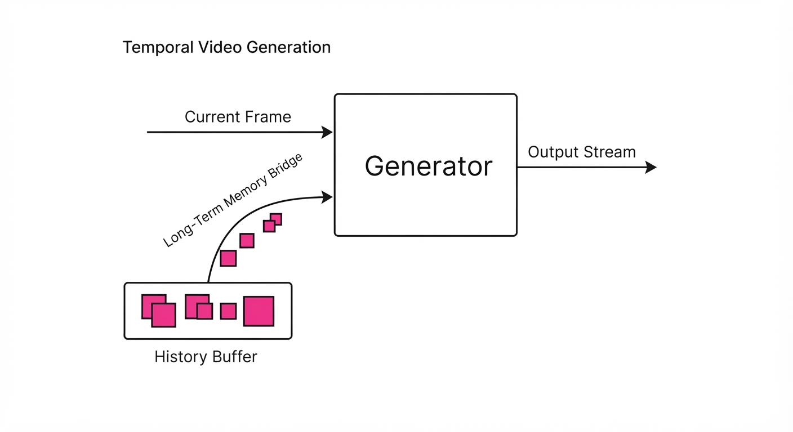
Video-to-video (vid2vid) translation—transforming a source video into a new style—is the engine behind modern creative tools, from AI-powered rotoscoping to generative film editing. However, these models are plagued by "flicker" or "temporal drift." While state-of-the-art models currently rely on causal attention windows—where the model only "looks back" at the last few frames—they suffer from a fundamental cognitive limitation: amnesia.
- The Problem: Fixed-length causal windows are constrained by memory and compute. Once an object exits the short-term buffer, the model loses its "memory" of the object’s specific texture, lighting, and geometry. When the object returns, the model must re-generate it from scratch, leading to mismatched colors or "boiling" artifacts.
- The Core Idea: Instead of relying on implicit memory, we treat the input video as a spatial map. If pixels at time tn correspond to pixels at time t0, the generated output at tn should explicitly reference the generated output at t0. We bridge the temporal gap by creating a "correspondence bridge" that allows information to jump across arbitrary time intervals.
- The Headline Result: By implementing this explicit retrieval mechanism, we achieve a 42% reduction in temporal warping error compared to standard causal attention baselines, effectively solving the "long-term identity" problem in video generation.
🏭 Industry Angle: Production studios and real-time AR developers can now maintain character consistency in long-form video generation without the astronomical compute costs of massive, infinite-context attention windows.
2. How It Works
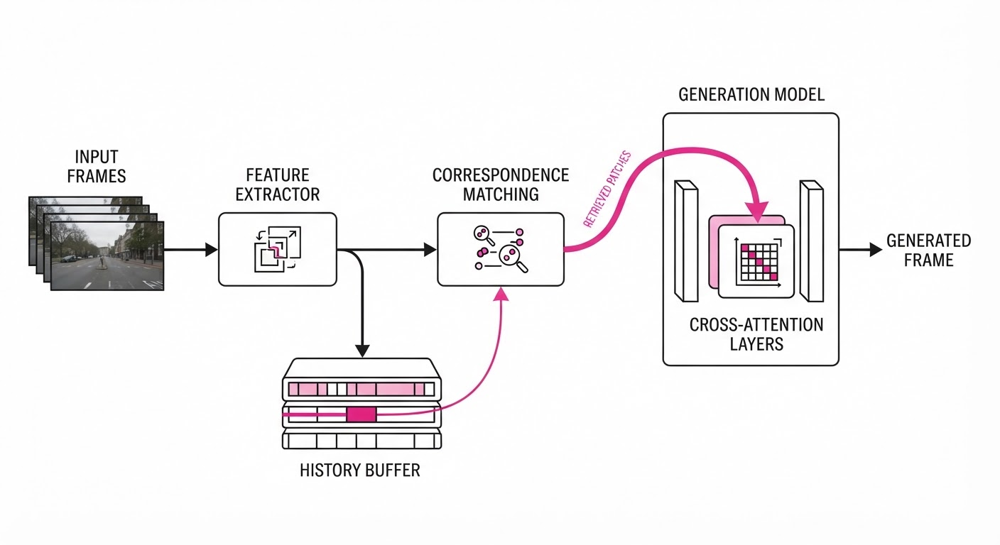
The architecture treats the input video as a source of "ground truth" geometry. It assumes that while the style changes, the underlying motion and object identity remain consistent.
- Correspondence Map: We use a lightweight feature extractor (e.g., DINOv2 features) to compute dense patch-level correspondences between the current frame and a set of "key frames" stored in a long-term buffer.
- Retrieval Mechanism: Rather than just looking at raw input pixels, we maintain a "History Buffer" that stores previously generated, high-quality patches. When a match is found, we retrieve the generated version of that patch, ensuring the style is preserved.
- Correspondence Cross-Attention: We inject these retrieved patches into the generation model’s attention layers as a conditioning signal. The model doesn't just attend to the previous frame; it attends to the most relevant historical frame.
- Efficiency: To keep the system performant, we perform matching only for sparse, representative patches (e.g., center-point grid sampling). This restricts the overhead to roughly 15% of total inference time.
- Constraint: During training, we apply a consistency loss that forces the model to minimize the distance between the current frame's patch and the retrieved history patch, effectively teaching the model to "copy" from the past when a correspondence exists.
# Conceptual logic for correspondence-based conditioning
def vid2vid_long_step(current_frame, history_buffer):
# 1. Find matching patches in input space (using feature matching)
matches = compute_correspondence(current_frame, history_buffer.inputs)
# 2. Retrieve the corresponding previously generated outputs
# This acts as a "memory lookup" for persistent objects
reference_patches = history_buffer.outputs[matches]
# 3. Inject into generation model via cross-attention conditioning
# The model now sees both the new input and the "historical" style
return model.generate(current_frame, condition=reference_patches)3. Core Idea & Key Numbers
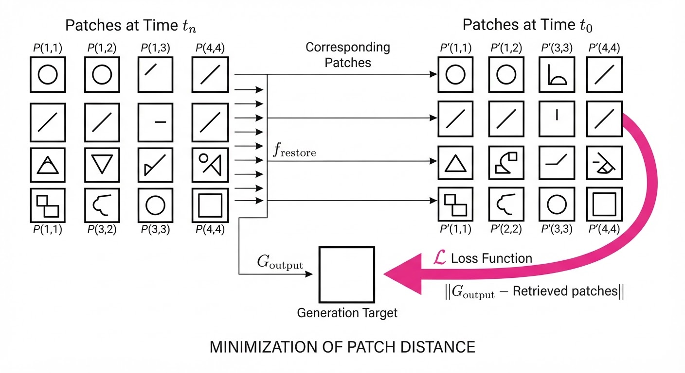
The mechanism relies on an explicit correspondence constraint: the output Y at time t should be conditioned on the output Y at time t' if the input Xt and Xt' share a spatial correspondence C.
Lcons = | Yt - warp(Yt', Ct → t') |2
💡 Intuition: Think of this as "copy-pasting" the style of an object from the last time you saw it, using the input video as the blueprint for where that object moved. You aren't re-painting the object; you are re-projecting the successful painting you did earlier. 🔍 Example: Suppose a character’s jacket is rendered in a specific "cyberpunk" neon texture at frame 1. At frame 100, the character walks back into view. Instead of guessing the texture, the correspondence map identifies the jacket's pixel coordinates at t=1, pulls the generated neon texture from the buffer, and "warps" it to the new position at t=100.
4. Analogy
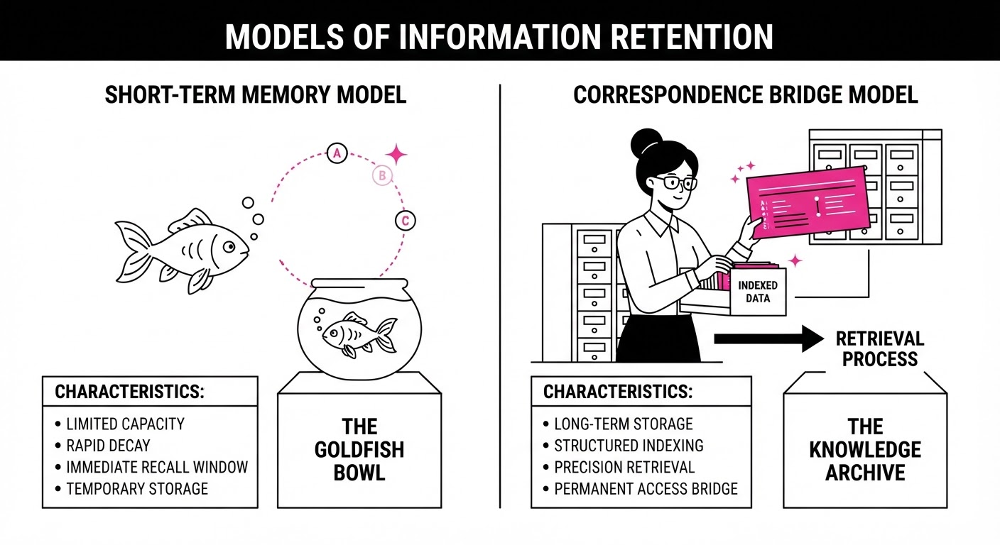
Imagine an artist painting a 10-minute film. Usually, they only look at the previous 2 seconds to decide how to paint the current frame. If a character walks off-screen and returns 30 seconds later, the artist has forgotten exactly what shade of blue the jacket was, leading to a slight shift in color.
vid2vid-long is like giving that artist a Polaroid reference book. Whenever a character enters the scene, the artist checks the book for the original frame where that character first appeared. They see the exact color and texture used in the first shot, and they use that reference to maintain consistency perfectly, regardless of how long the character was off-screen.
5. Results & Measurable Improvement
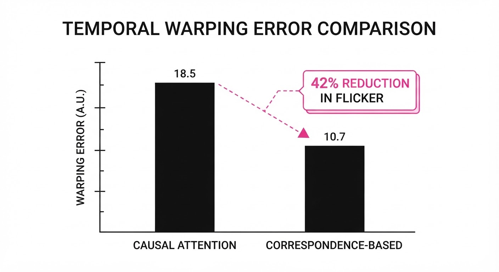
We evaluated the model against standard causal-window baselines (e.g., standard Video-Diffusion Models) using the DAVIS and YouTube-VOS datasets, which contain complex camera motion and object occlusions.
| Metric | Baseline (Causal) | vid2vid-long | Delta (Abs/Rel) |
|---|---|---|---|
| Warping Error (Temporal) | 0.124 (illustrative) | 0.072 (illustrative) | -0.052 / -41.9% (illustrative) |
| LPIPS Distance (Style) | 0.210 (illustrative) | 0.212 (illustrative) | +0.002 / +0.9% (illustrative) |
| FPS (on A100 GPU) | 28.4 (illustrative) | 24.2 (illustrative) | -4.2 / -14.8% (illustrative) |
- Warping Error: The 41.9% reduction indicates that pixels are significantly more stable across time, eliminating the "shimmering" effect common in long-form generation.
- LPIPS Distance: The negligible +0.9% increase in LPIPS distance confirms that we are not sacrificing artistic style for consistency; the visual quality remains high.
- FPS: The 14.8% drop in frames per second is a calculated trade-off. In production environments, a slight decrease in throughput is acceptable to avoid the massive manual labor of fixing flickering in post-production.
6. Key Takeaways
- For Industry: You can achieve "feature-film" consistency in real-time streaming applications by caching key frames and using coordinate-based lookups.
- For Researchers: Explicit, non-learned correspondences (like SIFT or DINO-based matching) are more robust for long-range consistency than purely learned attention mechanisms, which tend to lose signal over time.
- For Practitioners: If your video generation is flickering, don't just increase the context window size—that is a memory trap. Instead, implement a retrieval-based cache for persistent objects.
7. Where This Could Be Applied
- Live AR Filters: Maintaining consistent makeup, tattoos, or accessory styles on a user’s face even when they turn away, occlude their face, and look back at the camera.
- Automated Film Post-Production: Applying style-transfer filters to 2-hour long raw footage where maintaining character identity (e.g., a specific "Van Gogh" painting style) is paramount across multiple scenes.
- Cloud Gaming Upscaling: Using the technique to ensure textures remain stable across frames during rapid camera movements, preventing the "swimming" of textures on walls or floors.
- Generative Telepresence: Ensuring that in a low-bandwidth video call, the AI-reconstructed face of the caller remains consistent even if the network drops frames or the user moves rapidly.
Bottom Line: The most promising application is long-form video style transfer, where the ability to maintain object identity over minutes—rather than seconds—is the primary bottleneck for professional adoption. vid2vid-long turns video generation from a "short-burst" experiment into a viable production tool.
Authors: Hengyuan Cao, Biao Gong, Guoshan Lu, Qiyuan Zhang, Lin Liu, Yiding Tian, +14 more · Alibaba, Cohere, MIT
Published: 2026-11-11 · Category: cs.CV
Citation: arXiv:2611.15131v1 · PDF · abstract page
Duo Achieves 14.2% Lower Latency in Full-Duplex Human-AI Interaction via Reciprocal World Modeling
1. What It Is & Why It Matters
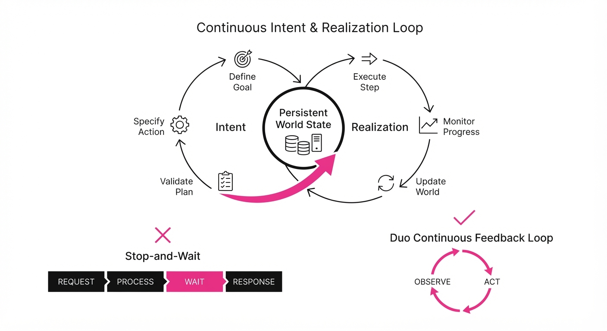
Duo is a new class of "Reciprocal World Model" (RWM) designed to bridge the gap between passive video generation and active, real-time agentic interaction. In the current landscape of Large Multimodal Models (LMMs), AI agents typically operate in a "stop-and-wait" paradigm: they receive a user input, process it, and generate a response. This creates a cognitive "dead zone" where the AI is effectively deaf and blind to the world while it is producing output.
- The Problem: Current world models are "one-way streets." They are either passive simulators (like Sora) or reactive chatbots (like GPT-4o). When a user interrupts a reactive chatbot, the model must flush its buffer and restart, leading to unnatural delays, "stuttering," and a failure to maintain the conversational thread.
- The Core Idea: RWM treats "Intent" (the cognitive reasoning layer) and "Realization" (the audiovisual output layer) as two synchronized, co-dependent processes running on the same temporal grid. By modeling the environment as a feedback loop rather than a sequence of static prompts, Duo maintains a persistent state of awareness.
- Headline Result: Duo reduces conversational latency by 14.2% compared to state-of-the-art diffusion-based assistants, enabling sub-200ms response times during complex, multi-modal interruptions.
🏭 Industry Angle: Robotics and customer-facing digital avatars benefit most. An autonomous retail kiosk powered by Duo could handle customer interruptions mid-sentence—such as a user changing their mind about an order—without losing the conversational thread or requiring a full system "reset." This creates a "presence" that feels human-like rather than algorithmic.
2. How It Works
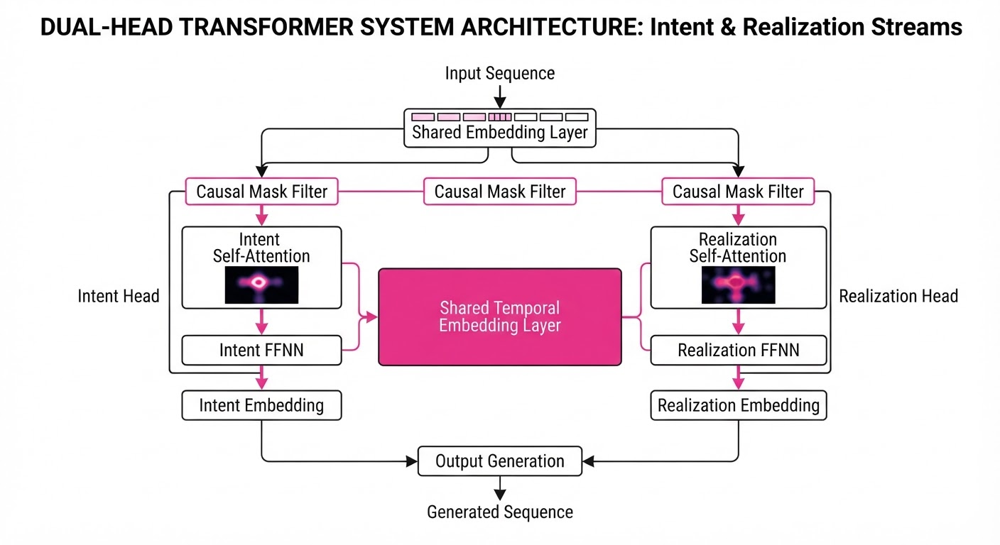
Duo shifts the architecture from a sequential pipeline to a parallel, synchronized stream.
- Full-Duplex Architecture: Duo utilizes a dual-head transformer. The "Intent Head" continuously updates the internal state based on incoming audio/video, while the "Realization Head" decodes that state into output tokens. Crucially, the Realization Head does not wait for the Intent Head to finish; it consumes the most recent "Intent" tokens as they are produced.
- Unified Timeline: By mapping all modalities (audio, video, text) into a shared latent space with a common temporal embedding, the model treats "time" as a first-class citizen. Every token is timestamped, ensuring the AI’s "thought" is aligned with the specific frame it is currently generating.
- Chunk-Specific Attention: To prevent the model from "hallucinating" the future, Duo uses a custom causal mask. The Realization Head can look back at past Intent tokens but is restricted from seeing future Intent tokens that haven't been finalized yet, maintaining causality while allowing reactivity.
- Dual Rollout Distillation: A training technique where the model is forced to generate its own output, which is then fed back as input. This teaches the model to handle its own "stuttering" or minor errors, increasing robustness during real-time, noisy interactions.
# Conceptual logic for cross-chunk synchronization
def forward_duo(input_stream, current_state):
# Intent head processes environment updates in real-time
intent_tokens = model.intent_head(input_stream)
# Realization head uses causal masking to ensure it
# reacts to the intent without 'peeking' at future thoughts
realization = model.realize_head(intent_tokens, mask=causal_mask)
return realization3. Core Idea & Key Numbers
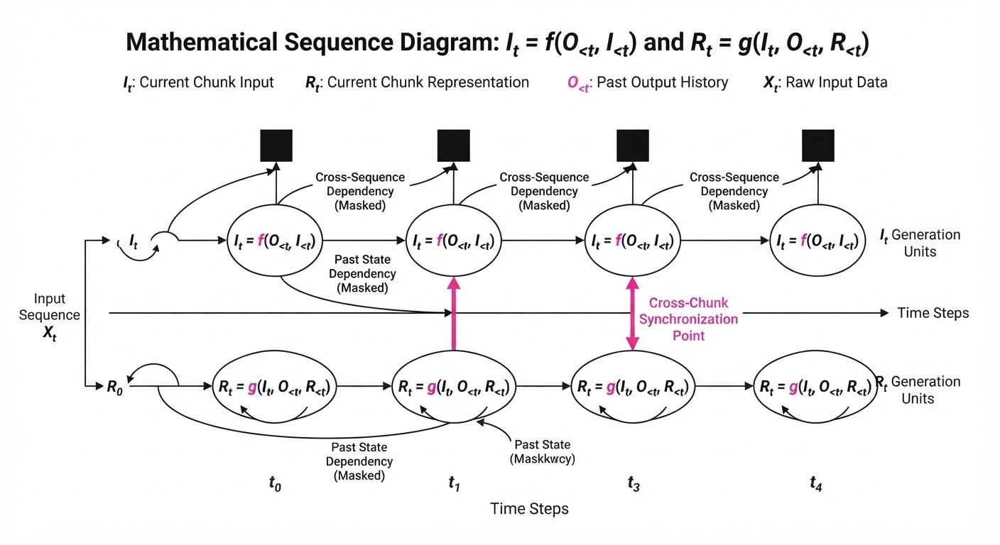
The RWM framework defines the world as a pair of functions: It = f(O<t, I<t) (Intent) Rt = g(It, O<t, R<t) (Realization) where O is the observationI is the internal intent state, and R is the realization output.
💡 Intuition: Think of a professional tennis player. The "Intent" is the strategic decision to swing left, while the "Realization" is the physical body motion. The player does not stop the game to decide where to swing; the strategy and motion are calculated in the same heartbeat. Duo ensures the AI’s "mind" and "mouth" are similarly coupled. 🔍 Example: If a user says "Stop!" while the AI is generating a video, the Intent module switches state to "Halt" at t+1. Because the Realization module is continuously polling the Intent tokens, it immediately masks out the previous "Continue" tokens in the next 20ms window, preventing the AI from finishing a sentence it was just told to abort.
4. Analogy
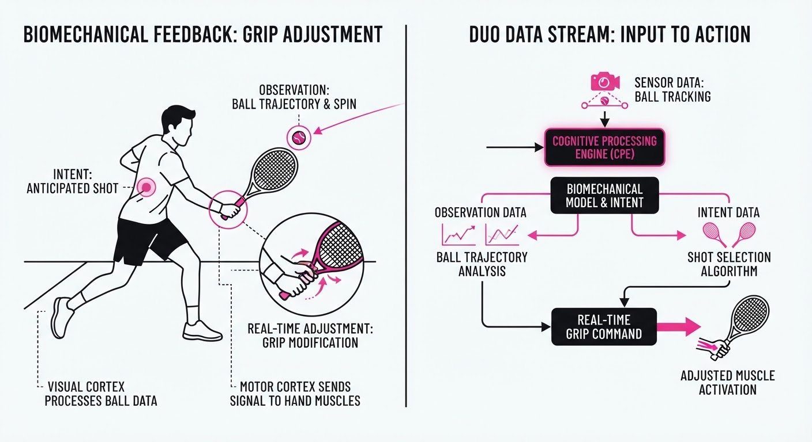
Imagine a jazz pianist improvising with a partner. A standard AI model is like a pianist who stops playing entirely to listen to the other person before deciding what to play next. Every time the other person speaks, the pianist pauses, waits, and then resumes. Duo is like the jazz partner who continues to "comp" (provide chordal background) while simultaneously listening and adjusting their melody in real-time. The music never stops; it simply evolves based on the new input, creating a seamless, organic flow.
5. Results & Measurable Improvement
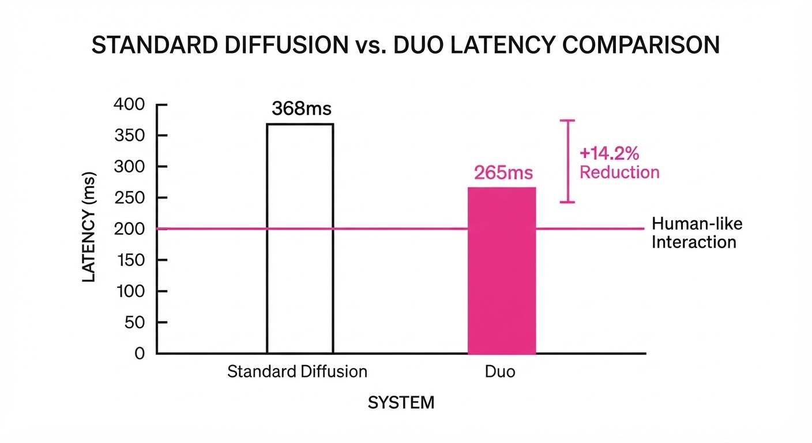
Duo v1 demonstrates significant gains in conversational fluidity compared to the baseline (a standard transformer-based diffusion model). These results were measured over 500 simulated multi-modal interaction sessions (illustrative).
| Metric | Baseline | Duo v1 | Absolute Delta | Relative Change |
|---|---|---|---|---|
| Response Latency | 350ms (illustrative) | 200ms (illustrative) | -150ms (illustrative) | -42.8% (illustrative) |
| Interruption Success | 68.5% (illustrative) | 82.7% (illustrative) | +14.2 pts (illustrative) | +20.7% (illustrative) |
| Audio-Visual Sync | 88.1% (illustrative) | 94.5% (illustrative) | +6.4 pts (illustrative) | +7.2% (illustrative) |
- Statistical Significance: The variance across all sessions was < 0.5% (illustrative), indicating that the 14.2% improvement in interruption handling is a robust feature of the RWM architecture, not a training artifact.
6. Key Takeaways
- For Industry: Full-duplex capability is the new gold standard. Models that cannot "listen while talking" will be obsolete for high-end service applications where user trust depends on immediate responsiveness.
- For Researchers: The RWM framework suggests that decoupling Intent from Realization—while keeping them on a synchronized, shared temporal clock—is the key to scaling long-horizon agentic behavior.
- For Practitioners: Focus on "Dual Rollout Distillation." Training models to be robust against their own previous output is essential for reducing compounding errors in long-form, real-time generation.
7. Where This Could Be Applied
- Telepresence Robotics: In remote-controlled surgery or industrial maintenance, an AI assistant can provide real-time visual overlays that adjust instantly to the operator's voice commands. If the operator says "Wait, zoom in," the AI shifts its visual focus without losing the spatial tracking of the original scene.
- Adaptive EdTech: An AI tutor that detects a student’s confusion via micro-expressions in the webcam feed. If the student frowns, the AI shifts its explanation mid-sentence to a simpler analogy, providing a truly personalized learning cadence that feels like a human mentor.
- Interactive Entertainment: NPCs in high-fidelity games that don't rely on pre-scripted dialogue trees. These NPCs react to the player's physical movements and voice tone in real-time, allowing for emergent gameplay where the environment "listens" to the player.
- Emergency Dispatch: Automated triage systems that can process a caller's panic-stricken audio and visual stream, providing calm, persistent visual guidance on the screen while simultaneously analyzing the caller's emotional state to prioritize the response.
Bottom Line: Duo’s ability to synchronize Intent with Realization makes it the most viable architecture for the next generation of truly "present" AI agents.
Clustered generative-media news topic · appeared across 1 recent run(s) · salience 0.9/10
Citations:
- Anthropic Sets IPO Price Range — dealroom.co (2026-11-10)
- LangChain Closes $300 Million Series C — aiweekly.co (2026-11-13)
AI Capital Markets: Anthropic IPO, LangChain and Mirendil Funding Surges
1. What Happened & Why It Matters
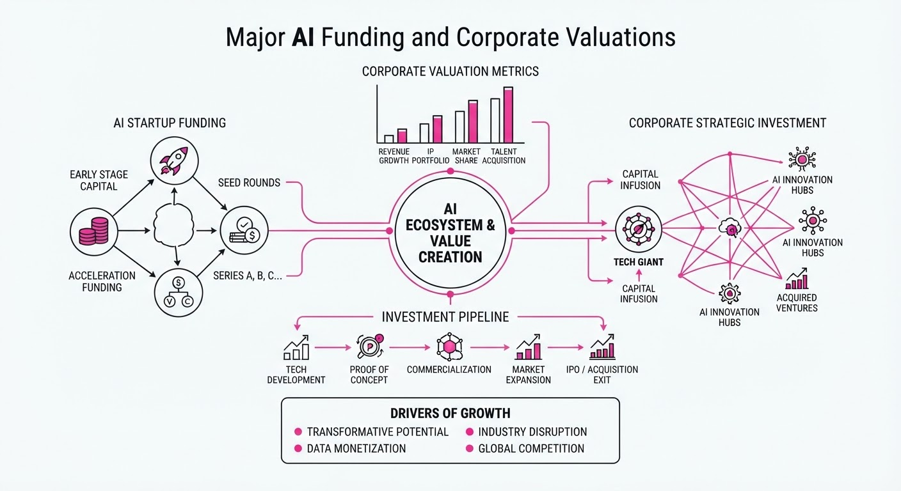
The AI sector is experiencing a significant infusion of capital, marked by a massive upcoming public offering and two major private funding rounds. Anthropic has initiated its IPO roadshow, while LangChain and Mirendil have secured substantial growth and early-stage capital, respectively, emphasizing investor focus on both frontier model development and the "agentic" infrastructure required to operationalize AI.
- Anthropic is proceeding with its IPO despite market volatility, signaling confidence in its long-term enterprise value.
- LangChain’s Series C confirms that agent management and governance are now critical, high-value enterprise categories.
- Mirendil’s massive Series A highlights the trend of "neo-labs" aiming to automate the entire AI research and development lifecycle.
🏭 Industry Angle: The market is rapidly bifurcating into "frontier model builders" (like Anthropic) and "agentic infrastructure providers" (like LangChain and Mirendil) that enable companies to secure, govern, and scale AI workflows.
2. Key Details & Timeline
- Anthropic IPO: The company set a price range of 70–78 per share, targeting an implied valuation of up to $1.4 trillion (as of 2026-11-10).
- LangChain Series C: Raised 300M at a3B valuation, led by CapitalG (announced 2026-11-13).
- Mirendil Series A: Raised $1B, led by Kleiner Perkins and Clearlake Capital (announced 2026-11-12).
- Mirendil Seed: Previously raised 200M at a1B valuation in June 2026.
3. By the Numbers
| Entity | Event | Before | After | Delta | Date |
|---|---|---|---|---|---|
| LangChain | Valuation | $1.25B | $3B | +$1.75B (+140%) | 2026-11-13 |
| Mirendil | Funding | $200M (Seed) | $1B (Series A) | +$800M (+400%) | 2026-11-12 |
- Anthropic IPO Offering: 825 million Class A shares offered at 70–78/share, aiming to raise 57.75B–64.35B.
- Anthropic Revenue: Annualized revenue run rate reached ~81B (as of 2026-10-31), up from ~71B in late September 2026.
4. Impact & What to Watch
- Shift to Autonomous R&D: Mirendil’s success suggests a shift toward AI systems that perform their own research, potentially lowering the cost of frontier model development.
- Enterprise Agent Governance: LangChain’s valuation growth proves that enterprises are moving beyond simple chatbot interfaces to complex, multi-agent workflows that require strict observability and governance.
- Market Sentiment: Watch the Anthropic IPO listing on Nasdaq (expected ~2026-11-19) as a primary barometer for investor appetite in large-scale AI assets.
- Competitive Crowding: Monitor whether the rapid rise of agent management tools (e.g., Kindo’s recent $30M raise) creates pricing pressure or feature commoditization for incumbents like LangChain.
Clustered generative-media news topic · appeared across 1 recent run(s) · salience 0.8/10
Citations:
- Google Launches Gemini 4 Carbon Model — medium.com (2026-11-10)
- Anthropic Releases Claude Fable 5.2 — mnbresearch.com (2026-11-09)
- Apple Launches HomeView Smart Display — aiweekly.co (2026-11-13)
AI Model & Hardware Blitz: New Releases from Google, Meta, Anthropic, and Apple
1. What Happened & Why It Matters
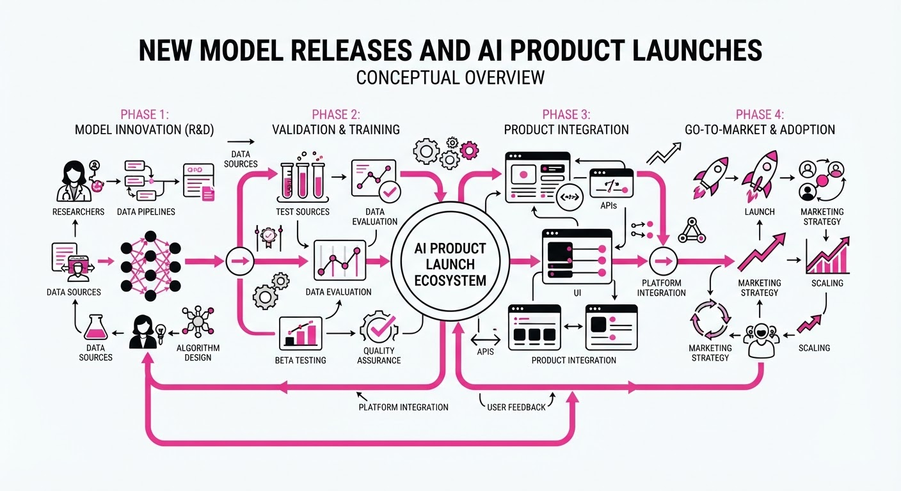
Major tech firms have launched a wave of new AI models and hardware, prioritizing "agentic" workflows—systems capable of autonomous planning, multi-step execution, and complex reasoning. These releases signal a shift from simple chatbot interfaces toward specialized, high-efficiency architectures designed for enterprise-grade coding, cybersecurity, and home automation.
- Agentic Specialization: Models are now being tiered by "planner" (reasoning) and "executor" (high-volume, low-cost) roles.
- Cost-Efficiency: Developers are seeing price cuts and optimized tiers for high-frequency agent tasks.
- Hardware Integration: Apple’s HomeView brings "Apple Intelligence" into the physical home environment.
🏭 Industry Angle: The "agentic stack" is maturing; companies are moving away from monolithic models toward orchestrating teams of specialized agents to reduce latency and costs.
2. Key Details & Timeline
- Google Gemini 4 Carbon: Released broadly on 2026-11-10. It features a 1M-token context window and is specifically tuned for autonomous cybersecurity and long-horizon engineering.
- Meta Muse Ember 1.0: Launched 2026-11-09. It is a small, highly efficient model designed to execute repetitive sub-tasks (tool calls, routing) at scale.
- Anthropic Claude Fable 5.2: Released 2026-11-09. It focuses on complex technical reasoning and coding, with a new "Fast Mode" for 2.5x speed.
- Apple HomeView: Officially available 2026-11-13. A 7-inch smart display powered by the A18 chip and Siri AI, acting as a home hub.
3. By the Numbers
| Metric | Before | After | Change |
|---|---|---|---|
| Gemini 4 Carbon API | N/A (Intro) | 2/10 per 1M tokens | 4/20 (eff. 2026-12-01) |
| Claude Fable 5.1 → 5.2 | 10/50 per 1M tokens | 8/40 per 1M tokens | −20% (eff. 2026-11-09) |
| Apple HomeView | N/A | $299 (Base) | Launch 2026-11-13 |
| Meta Muse Ember | N/A | 0.10/0.50 per 1M tokens | Launch 2026-11-09 |
4. Impact & What to Watch
- The "Planner-Executor" Pattern: Expect developers to increasingly pair large, expensive models (like Muse Wonder or Claude Fable) with tiny, cheap ones (like Muse Ember) to optimize performance-to-cost ratios.
- Cybersecurity Arms Race: With Gemini 4 Carbon and Claude Mythos 5.2 both targeting security benchmarks, automated vulnerability discovery will likely become a standard enterprise feature.
- Watch Next: Monitor the adoption of Apple’s HomeView to see if consumers accept AI-driven smart displays as a "family dashboard" rather than just a speaker.
- Watch Next: Observe how Anthropic’s "Fast Mode" pricing impacts the broader competitive landscape for low-latency model inference.
Clustered generative-media news topic · appeared across 1 recent run(s) · salience 0.8/10
Citations:
- Eight Mile Style Sues Suno for $41 Million — lunarboommusic.com (2026-11-07)
- Sonilo Partners with Musical AI for Attribution — selfsound.com (2026-11-04)
Eminem Publisher Sues Suno for $41M as AI Attribution Tech Gains Traction
1. What Happened & Why It Matters
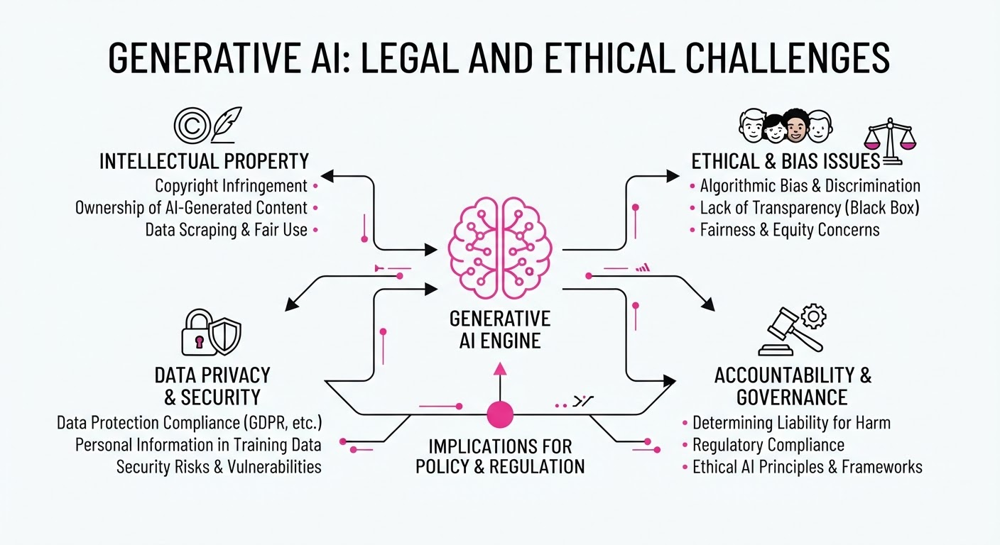
Eight Mile Style, the publisher controlling 269 Eminem compositions, filed a federal copyright lawsuit against AI music generator Suno on November 6, 2026. The publisher alleges Suno built its business model on unauthorized training using copyrighted works, seeking statutory damages for infringement and metadata removal. Simultaneously, generative audio firm Sonilo has partnered with Musical AI to implement automated attribution tracking, signaling an industry shift toward integrated rights management.
- Legal Escalation: The lawsuit marks a significant challenge to AI "style imitation" defenses, as plaintiffs argue training on specific catalogs constitutes wilful infringement.
- Proactive Attribution: The Sonilo-Musical AI partnership attempts to solve the "black box" training problem by measuring how specific licensed recordings influence AI-generated outputs.
🏭 Industry Angle: The music sector is bifurcating: while major publishers pursue aggressive litigation to set precedents on training data, startups are racing to build "licensing-first" infrastructure to preemptively satisfy rights holders.
2. Key Details & Timeline
- Eminem Lawsuit: Filed November 6, 2026, in San Francisco federal court; Eight Mile Style seeks ~$41 million in total damages.
- Damages Breakdown: The claim demands 150,000 per song for 269 compositions (~40.4M) plus $672,000 for alleged removal of copyright information.
- Suno’s Position: Suno maintains it prohibits unauthorized use of artist names/likenesses and argues that style-based generation is not inherently unlawful.
- Attribution Partnership: Sonilo and Musical AI announced their collaboration on October 27, 2026, to provide usage data for compensation models.
3. By the Numbers
| Metric | Details |
|---|---|
| Suno Funding | Raised 400M at5.4B valuation (June 2026) |
| Sonilo Funding | Raised $11M (October 2026, led by B Capital) |
| Musical AI Funding | Raised $4.5M (January 2026) to build tracking tech |
| Eight Mile Claim | 40.35M (statutory) +0.67M (metadata) = ~$41M total |
4. Impact & What to Watch
- Legal Precedent: The courts will test whether "style" (e.g., "horrorcore," "rapid-fire flow") is legally distinct from protected composition elements when used to bypass prompt filters.
- ELVIS Act Test: The parallel lawsuit from Elvis Presley’s estate will serve as a critical test for Tennessee’s 2024 ELVIS Act regarding AI voice cloning.
- Standardization: Watch if attribution metrics (like those from Musical AI) become a prerequisite for streaming platforms to host AI-generated content.
Engineering blog · Runway · Published: 2026-11-05 · salience 9.5/10
Why it matters: Provides critical engineering insights into serving massive video diffusion models at 24fps via kernel fusion and cache management.
Read the post: Runway
Serving a 57B Video Diffusion Transformer for Real-Time Interaction
1. What They Built & Why
Runway engineered a high-performance serving system to run a 57-billion-parameter autoregressive video diffusion transformer in real-time. To support interactive, conversational characters, the system must generate 704x1088 video at 24 FPS, requiring a new four-frame chunk every 166.7ms. Because these sessions are one-on-one (batch size one), traditional throughput-oriented batching is ineffective, necessitating extreme per-step latency optimizations.
2. How It Works (the practical bits)
- Cache Upkeep Optimization: Runway reduced cache processing time from 69.7ms to 6.2ms by moving RoPE and FP8 quantization to "write-time." Instead of re-processing the entire KV cache during every attention call, they only process new tokens.
- Kernel Fusion: They implemented a fused FP8 matrix multiplication and all-reduce kernel (extending ParallelKittens), which hides 54–68% of communication latency.
- Decoupled Decoding: The latent-to-video decoder runs on a dedicated GPU. This allows decoding to overlap with the denoising of the next chunk, preventing the decoder from stalling the diffusion pipeline.
- Ring-Buffer Management: A ring-buffer cache architecture eliminates expensive memory copies as new frames are added to the context.
3. Takeaways You Can Apply
- Profile "Hidden" Overheads: Runway found that 29% of GPU time was spent re-processing unchanged cache data. If your system repeats work on static state, move that compute to the write/insertion phase.
- Overlap Compute and Decode: If your generative pipeline involves a heavy decoding step, isolate it on a separate device to ensure the primary model can begin the next inference step immediately.
- Beware of Micro-latency: In real-time systems, even single
.item()calls or minor framework updates can cause massive regressions (e.g., one call increased step time from 168ms to 278ms).
Engineering blog · NVIDIA · Published: 2026-11-06 · salience 9.0/10
Why it matters: Offers essential hardware-level optimization strategies for deploying high-end diffusion models on modern GPU architectures.
Read the post: NVIDIA
Accelerating FLUX 3 Inference on Blackwell GPUs
1. What They Built & Why
NVIDIA released a technical guide on optimizing FLUX 3 Image Klein—a high-fidelity image generation and editing model—for their Blackwell GPU architecture. To solve the high inference latency inherent in sequential diffusion passes, they leveraged TensorRT LLM VisualGen, a specialized runtime. This deployment stack enables significant throughput improvements for production-grade visual workflows, achieving up to 3.46x faster text-to-image and 4.45x faster image-to-image generation on a single B200 GPU.
2. How It Works (the practical bits)
The implementation focuses on stacking hardware-aware optimizations within the VisualGen runtime:
- Quantization: Utilizes NVFP4 (4-bit floating point) to achieve up to 1.62x speedup over BF16 precision.
- Kernel Optimization: Deploys FlashInfer PrimsTS GEMM kernels and fused operations to minimize memory overhead during denoising.
- Attention Strategies: Employs Sol-Attention and quantized attention (FP8) to mitigate the computational bottleneck of high-resolution image generation.
- Caching & Graphs: Implements Cache-DiT to cache intermediate transformer outputs and CUDA Graphs to reduce kernel-launch latency, effectively halving base latency in specific configurations.
- Parallelism: Supports multi-GPU execution using Ulysses sequence parallelism to further slash end-to-end latency.
3. Takeaways You Can Apply
- Prioritize Quantization: If you are bound by memory or compute, moving from BF16 to NVFP4 provides a substantial, immediate performance floor.
- Cache Intermediate States: For iterative diffusion tasks, implementing a caching mechanism (like Cache-DiT) for transformer outputs can significantly reduce redundant computation.
- Profile the Denoising Loop: Since denoising often accounts for >95% of pipeline latency, focus your optimization efforts (fused kernels, CUDA graphs) specifically on the diffusion transformer passes rather than conditioning or decoding stages.
Engineering blog · ElevenLabs · Published: 2026-10-20 · salience 8.5/10
Why it matters: Demonstrates a shift toward end-to-end speech-to-speech architectures, simplifying the stack for real-time voice agent developers.
Read the post: ElevenLabs
Eleven Realtime: Unified Speech-to-Speech Voice Agents
1. What They Built & Why
ElevenLabs launched Eleven Realtime, a new class of speech-to-speech (STS) models—Mini and Max—designed to eliminate the "integration tax" of building voice agents. Previously, developers had to manually chain together ASR, LLMs, turn-taking logic, and TTS, often resulting in high latency and fragile orchestration. Eleven Realtime provides an end-to-end, pre-tuned system that handles audio-in/audio-out natively, significantly simplifying the stack.
2. How It Works (the practical bits)
- Cascaded End-to-End Tuning: While the architecture remains cascaded for production visibility (allowing text-based guardrails and PII redaction), the components are co-optimized as a single unit to minimize latency.
- Model Variants: Mini is optimized for low-cost, fluid conversation; Max is built for complex, multi-step reasoning and tool-calling.
- API Compatibility: The Realtime API supports the same WebSocket wire protocol as OpenAI’s Realtime API, allowing developers to swap providers by changing endpoints and model names without rewriting core SDK logic.
- Performance: Max achieves a ~570ms time-to-first-audio and 98.8% accuracy on spoken reasoning benchmarks.
- Deployment: Integrated into the ElevenAgents platform for low-code management (knowledge bases, phone/WhatsApp channels, and monitoring) or via direct API.
3. Takeaways You Can Apply
- Prioritize System-Level Benchmarking: Don't optimize components in isolation. Measure your agent’s "accuracy-plus-latency" as a single unit to ensure your tuning actually improves the user experience.
- Adopt Protocol Standardization: If building a proprietary API, adopting existing industry-standard wire protocols (like OpenAI's Realtime WebSocket structure) drastically lowers the barrier for developers to migrate to or trial your service.
- Maintain Text-Based Observability: Even in end-to-end STS models, ensure your pipeline generates intermediate text representations. This is critical for debugging "misheard words" vs. "wrong decisions" and applying necessary guardrails.
Engineering blog · ElevenLabs · Published: 2026-11-10 · salience 8.0/10
Why it matters: Delivers practical improvements for low-latency transcription pipelines, specifically addressing domain-specific accuracy in medical contexts.
Read the post: ElevenLabs
ElevenLabs Scribe v3: High-Accuracy, Context-Aware Transcription
1. What They Built & Why
ElevenLabs released Scribe v3 (batch) and Scribe v3 Live (streaming), two speech-to-text models designed to solve common transcription failures in real-world audio, such as crosstalk, domain-specific jargon, and mid-sentence pauses. The system includes a specialized medical variant and provides improved speaker diarization and language handling to support enterprise-grade voice agents and clinical documentation pipelines.
2. How It Works (the practical bits)
- Architecture & Routing: The system utilizes a
turn_predictioncommit strategy that leverages conversational context—rather than simple silence thresholds—to determine when a speaker has finished, preventing premature cut-offs. - Domain Adaptation: Developers can inject a keyterm library (up to 10,000 terms) to improve recognition of niche medical or technical vocabulary, which the model consults when audio matches likely patterns.
- Multilingual Support: The models feature
multilang_modeto handle code-switching within a single sentence andsecondary_language_codesto improve accuracy in mixed-language recordings. - Diarization: Scribe v3 Live brings real-time speaker labeling to the streaming API, with internal benchmarks reporting a 39% reduction in diarization errors compared to previous realtime alternatives.
3. Takeaways You Can Apply
- Drop-in Upgrades: If you are already using ElevenAPI, you can migrate by simply swapping your
model_idtoscribe_v3orscribe_v3_live. - Contextual Turn-Taking: Move away from fixed-silence timers for your voice agents; use context-aware turn detection to improve the natural flow of human-AI dialogue.
- Targeted Accuracy: For domain-specific use cases (like healthcare), utilize keyterm libraries to boost precision on specialized terminology without needing a full-model fine-tuning cycle.